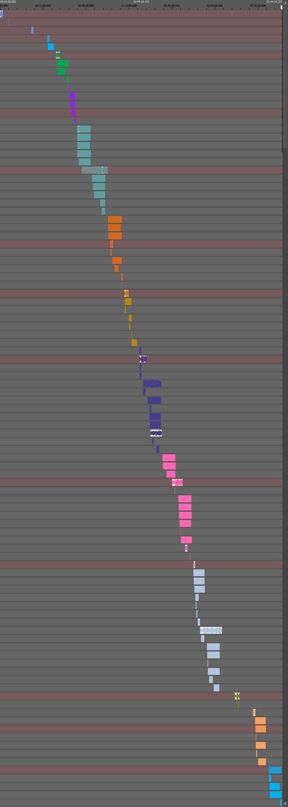

A Synchronization Ground Truth for the Jiku Mobile Video Dataset
The synchronization ground truth XML is not published yet, however the overview images can be seen below.
GT_090912
NAF_160312

NAF_230312

RAF_100812
SAF_290512

The synchronization ground truth XML is not published yet, however the overview images can be seen below.
© 2014 Institute of Information Technology, Alpen-Adria-Universität Klagenfurt, Austria. email.